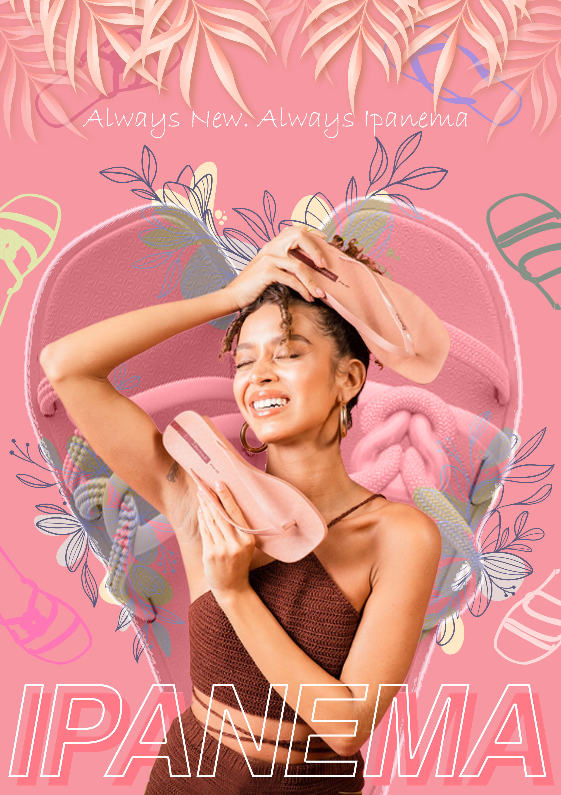
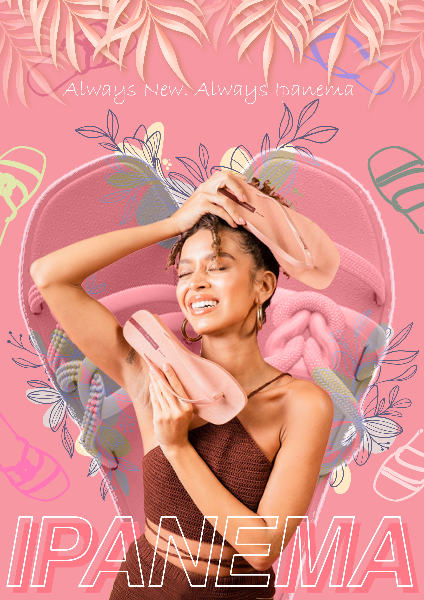

Hey There
It's me Reinan
I'm a front-end web developer, graphic designer, and intellectually curious person.
About me
What I Do
Front-end Developer
The process of creating a website's graphical user interface using HTML, CSS, and JavaScript
Graphic Design
The art of communication, stylizing, and problem solving through the use of type and image
Others
other abilities that I possess and am aware of
Education

AMA Computer Learning Center
(ACLC) College of Daet
Ojt / Work Immersion
ACLC College, Office of Academic Head
September 2022 – January 2023
486 Hours
I learned communication skills such as active listening to those enrolling or needing assistance, as well as physical organization skills such as organizing material into distinct labeled folders so it can be quickly found, returning items where they belong after use, and keeping any other physical resources required for work orderly.
Sampaguita Department store and convenience store
November 2018 – January 2019
160 Hours
I have learned visual communication and enhanced my Photoshop skills and design creativity, as well as having the opportunity to test out different editing tools and machines and my ability to work in a team.
Asian Technological Skills Institute, INC.
January 2018 – March 2018
160 Hours
Have improved my communication skills, active listening, problem solving, and adaptability. making more realaible.
My Skills
Web Development
HTML
2 years, 2 projects,
|
60%
|
Intermediate
CSS
2 years, 2 projects
|
65%
|
Intermediate
JavaScript
2 years, 2 projects
|
32%
|
Beginner
PHP
6 months, 1 project
|
23%
|
Beginner
MySql
2 years, 1 project
|
31%
|
Beginner
Framework
Tailwind
Starting to learn, Beginner
CSS
2 years, 2 projects
|
65%
|
Graphic Design
Photoshop
2 years, 11 ish projects
|
60%
|
Intermediate
Illustraor
5 months, 3 projects
|
20%
|
Beginner
Indesign
2 months, 1 project
|
20%
|
Beginner
Canva
4 months, 1 project
|
35%
|
Beginner
AfterEffects
2-3 months, 2 projects
|
10%
|
Beginner
Microsoft Office
Word
6 years, numerous projects
|
85%
|
Intermediate
PowerPoint
6 years, countless projects
|
88%
|
Intermediate
Excel
2 years, many projects
Intermediate
Publisher
4 months, 2 projects
|
10%
|
Beginner
Tools
Word
6 years, numerous projects
|
85%
|
PowerPoint
6 years, countless projects
|
88%
|
Excel
2 years, many projects
Publisher
4 months, 2 projects
|
10%
|
Soft skills
Intellectually Curious
Adaptability
Attention to detail
Creativity
Flexibility
Empathy
Communication
Problem-solving
Physical Organization
Projects


 

Graphic Design
Project & Personal Passion Project
I've put together a collection of my graphic design projects, including logos, posters, and invitation cards! 🎨✨ From eye-catching branding to captivating event invitations, I've poured my creativity into these designs and I'm thrilled to share them with you. Take a peek at my portfolio and let me know what you think!
Front-end Development

“Web-Based Profiling and Smart Strand Analyzer for Incoming Grade 11 Students"
The purpose of this project is to help incoming 11th grade students decide which track or strand to pursue by answering some basic pre-determined questions about careers that require similar skills or share similar characteristics. and the system will determine which strand the student excels in based on the results. The project is free and can be accessed via mobile phones and desktops using a web browser and the internet.
My Website Portfolio
Hey there! Just wanted to share that I've built my own website portfolio using HTML, CSS, JavaScript, and Gsap. It's been a blast diving into web development, and this portfolio lets me show off the projects I've been working on. I'd love for you to check it out sometime! 😊
Platforms